Dictionary learning has been very popular and shown efficient for many tasks such as image inpainting, image deblurring, super-resolution, and classification. Various algorithms have been proposed for dictionary learning. Famous examples have KSVD, and the online dictionary learning method. Both of them have been demonstrated to work well in practice. However, their convergence results have not been well established.
We apply the method proposed in our paper to the biconvex dictionary learning model
where 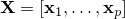 is a given training dataset. Our algorithm iteratively applies the following two updates
where 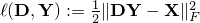, 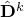 and 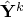 are some extrapolated points, and 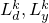 are Lipschitz constants.
Both the above two updates have closed form solutions and thus the algorithm is very easy to implement. In addition, the extrapolation technique can greatly speed up the convergence. Moreover, the algorithm provably converges to a stationary point of ().
We randomly generate a dictionary 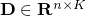 with 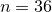 fixed. Then let 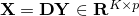, where each column of has Gaussian randomly generated nonzeros. Each atom of is regarded successfully recovered if 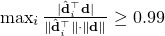, where is the recovered dictionary. The following table shows the time (in second) and recovery rates by our algorithm (Algorithm 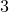 in our paper), KSVD and the online dictionary learning method on randomly generated data. Our algorithm performs the best.
| 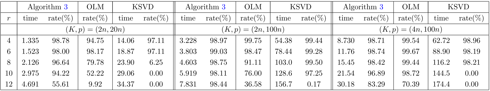 |
Y. Xu and W. Yin. A fast patch-dictionary method for whole-image recovery. Inverse Problems and Imaging, 10(2), 563–583, 2016.
. M. Aharon, M. Elad, and A. Bruckstein. KSVD: an algorithm for designing overcomplete dictionaries for sparse representation, IEEE Transactions on Signal Processing, 54(2006), pp. 4311–4322.
. J. Mairal, F. Bach, J. Ponce, and G. Sapiro. Online dictionary learning for sparse coding, in Proceedings of the 26th Annual Iternational Conference on Machine Learning, ACM, 2009, pp. 689–696.